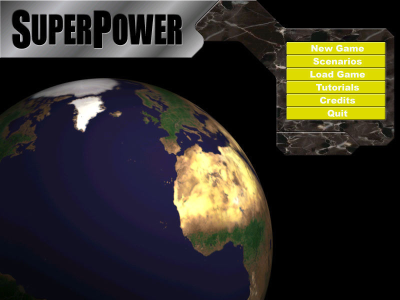
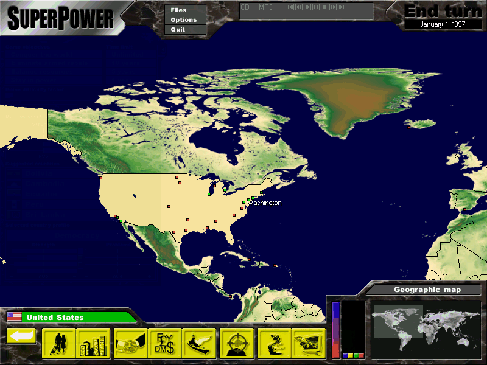

名稱：超級力量1／超級大國1 (SuperPower／GlobalPower，英文版) 簡介：GolemLabs 2002年出品的政治模擬回合制策略遊戲，由DreamCatcher代理發行 [待補]。   備註：本版為1.1版 保護：1.0版無保護，1.1版為光碟SafeDisc 2.60 備註：VirtualBox畫面點擊時會閃動，虛擬機建議使用VMware。 檔案：nocd11.rar = 1.1免光碟檔

